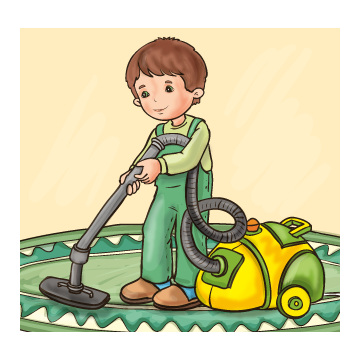
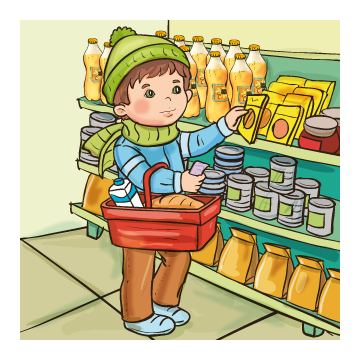
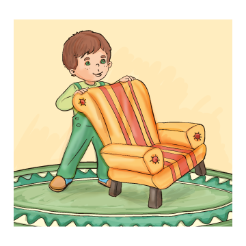
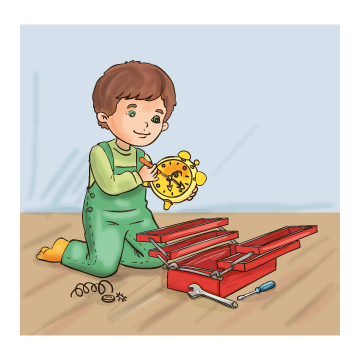
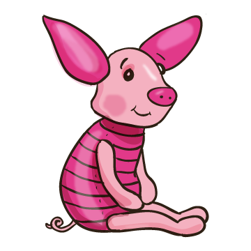
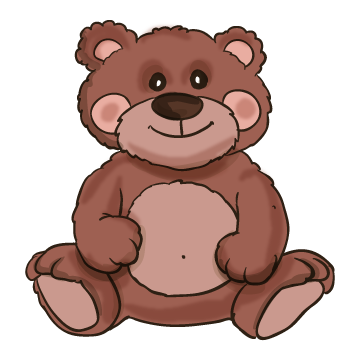
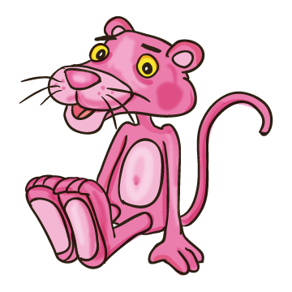
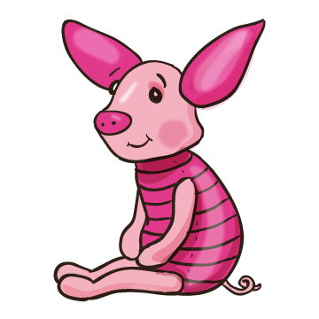

3. A mese alapján válaszolj kattintással a kérdésre!
Mit segített Barni Apának és Anyának?




A mese alapján válaszolj kattintással a kérdésre!
Melyik játéka a legnagyobb és legokosabb a játékpolcon?


A mese alapján válaszolj kattintással a kérdésre!
Ki bújt be Barni ágyába karácsony estéjén?

